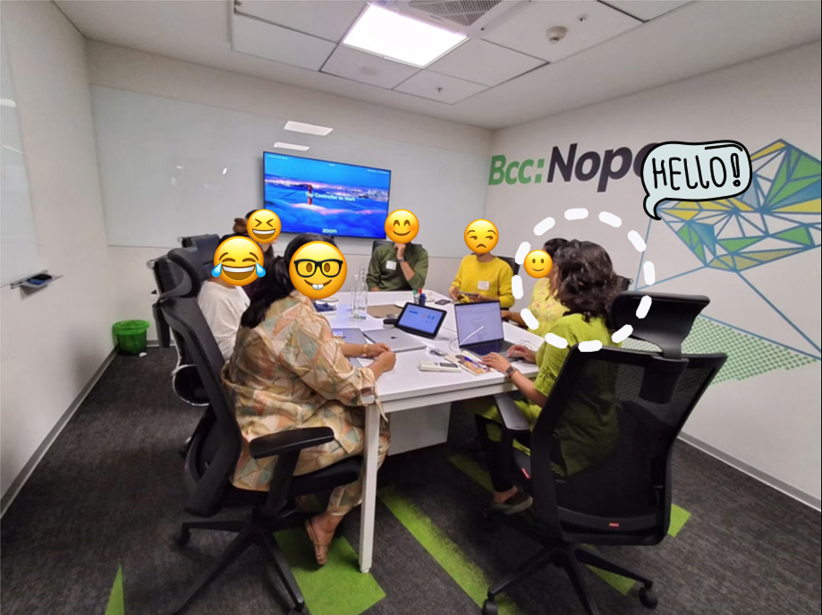

Method
Three instruments, run in sequence
Each method fed the next. The merchant interviews ran on their own track and ended up reshaping the whole study. The consumer side moved from open-ended group discussions to a large survey, using what the groups surfaced to make the survey sharper rather than broader.
Merchant interviews, 25+
I ran 25+ in-depth, 50-minute interviews with merchant decision-makers, stratified by company size, purchase frequency, and industry. Each session covered current pain points, a hypothetical-budget exercise (the "piggy bank," below), a participatory activity where merchants sketched their own ideal solution, and then a direct test of the proposed rewards marketplace.
The pitch itself landed flat. What changed the study was the activity that came right before it.
Consumer focus group discussions, 3
Three FGDs gave us broad consumer archetypes and a shared vocabulary for the D2C shopping experience, using journey mapping, pain-point storytelling, and progressive concept testing. Group dynamics let participants challenge each other's takes, which surfaced more honest reactions to the rewards concept than one-on-one interviews tend to.

Consumer survey, 1000+ respondents
Working with a market research partner, I fielded a survey to 1,000+ respondents to quantify what the FGDs surfaced: feature prioritization, willingness-to-try scores, a behavioral read for archetype-building, and a check on whether the concept offered anything genuinely new.